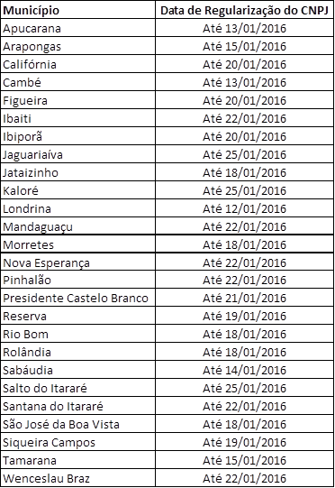
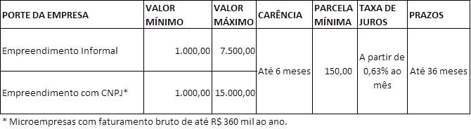

Fomento Recupera (Microcredito)
Created Friday 04 July 2014
Atualizado em 25/11/2015
Autalizado em 15/01/2016
Público Alvo
- Destinada EXCLUSIVAMENTE para atender EMPREENDIMENTOS localizados nos municípios atingidos pela CHUVAS que tenham publicado Decreto de Emergência ou Calamidade Pública.
** Atenção! A lista de municípios será atualizada à medida que foram publicados os decretos de emergência para municípios atingidos pelas enchentes de JAN/16 **
Quem pode se beneficiar?
Empreendimentos localizados nos municípios em situação de emergência (com DECRETO PUBLICADO), seguindo os seguintes termos:
a) Microempreendimentos Informais: SEM CNPJ, não sendo necessária a comprovação de tempo mínimo de atividade;
b) Microempreendimentos Formais: COM CNPJ, faturamento Bruto Anual de até R$360 mil, sem necessidade de comprovação de tempo mínimo de atividade;
OBS: Para fim de ENQUADRAMENTO, serão considerados como formais empreendimentos que tenham aberto CNPJ até as datas da tabela abaixo:

** Atenção! A lista de municípios será atualizada à medida que foram publicados os decretos de emergência para municípios atingidos pelas enchentes de JAN/16 **
O que pode ser financiado?
-CAPITAL DE GIRO PURO.
Limites de financiamento:

- Ambos 36 meses para pagemento com carência de até 6 meses, parcela mínima de R$150,00
- TAXA: a partir de 0,63% a.m. conforme análise de crédito
- Taxa máxima de 0,67% ao mês.
Critérios para contratação:
- Estar localizado nos municípios em situação de emergência;
- A condição do empreendimento afetado deverá ser atestada em visita do Agente de Crédito responsável pela operação;
- Serão adotados critérios operacionais dos produtos Banco do Empreendedor - Crédito Solidário (PF) e Banco do Empreendedor - Microcrédito (PJ).
Forma de pagamento:
- Prestações mensais fixas, com vencimento todo dia 10 de cada mês.
Garantias:
- AVAL DE TERCEIROS, mesmas regras vigentes para as linhas do Banco do Empreendedor.
Sistema FomentoNet: (ORIENTAÇÃO SOMENTE PARA AGENTES)
Cadastramento de propostas de FDE Recupera idêntica ao projeto de microcrédito.
Ao clicar em NOVO PROJETO no campo de seleção de linha de financiamento, selecionar FOMENTO RECUPERA.
Tarifas
Para financiamentos acima de R$ 4 mil será cobrata Tarifa de Abertura de Cadastro de 1,5% sobre o valor financiado pagos no ato da liberação do financiamento (caso a propostas seja aprovada).
Valor máximo da tarifa é de R$ 50 mil
Veja mais detalhes em Tarifas
Backlinks: 1. Wiki Fomento - Atendimento ao Cliente 5. Linhas de Financiamento